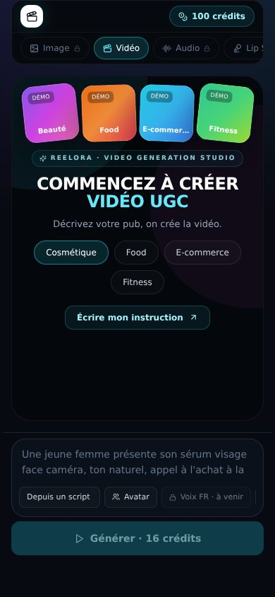
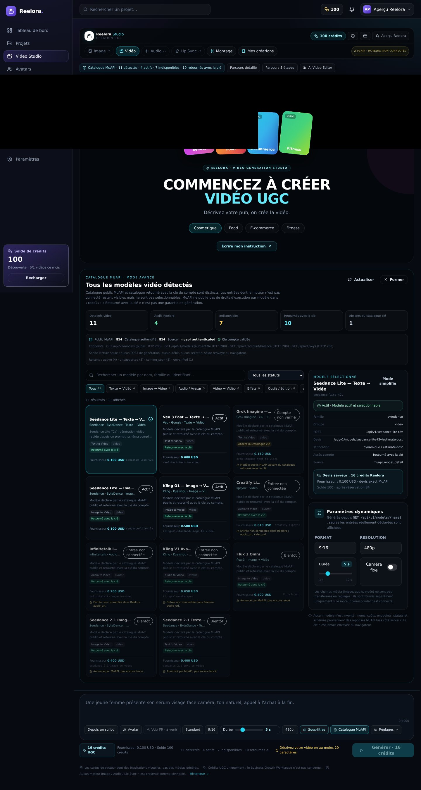
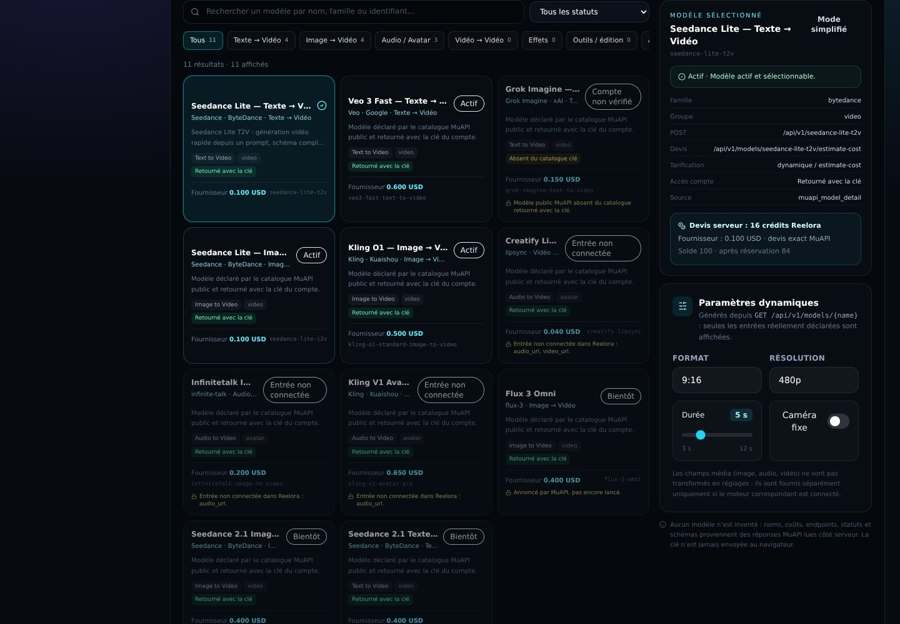
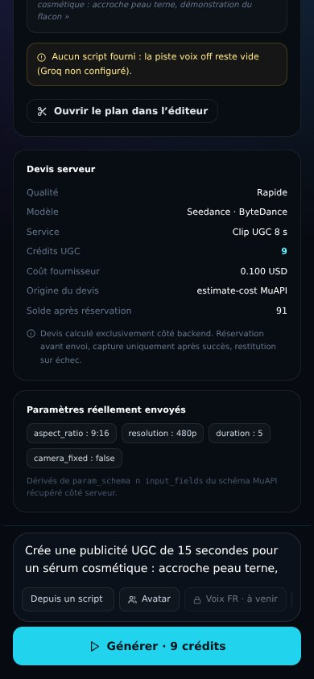
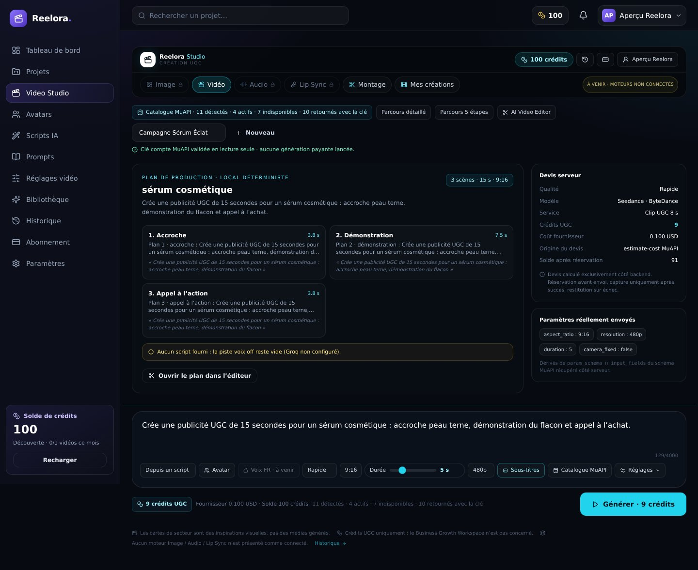
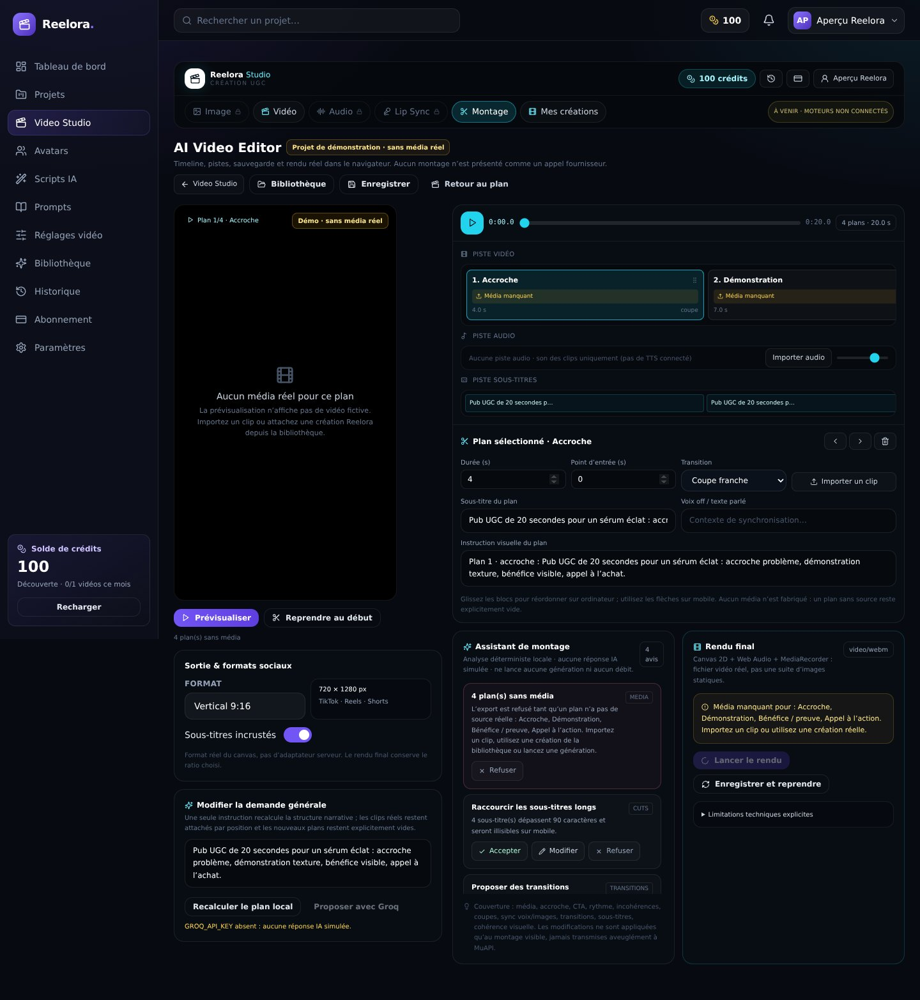

7/7 interactions vérifiées · 6 captures · 0 erreurs console · 0 erreurs page · 31 appels backend interceptés · aucune génération fournisseur lancée. Les cartes d’accueil sont des dégradés « Démo », pas des médias générés.





